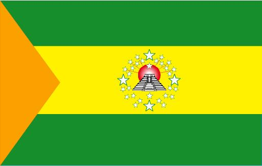
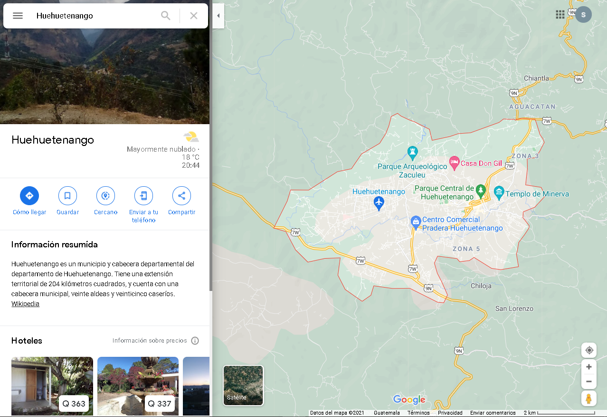

Huehuetenango es un municipio y cabecera departamental del departamento de Huehuetenango. Tiene una extensión territorial de 204 kilómetros cuadrados, y cuenta con una cabecera municipal, veinte aldeas y veinticinco caseríos.3Durante la época colonial fue el convento y doctrina de «Concepción de Güegüetenango» a cargo de los frailes mercedarios, y cuando estos tuvieron que entregar sus doctrinas al clero secular en 1754, pasó a ser uno de los once curatos de la Provincia y Alcaldía Mayor de Totonicapam, que en 1770 fue visitada por el arzobispo Pedro Cortés y Larraz quien realizó su visita pastoral en esos años.4Tras la Independencia de Centroamérica en 1821, fue cabecera del circuito del mismo nombre en el distrito N.º9 (Totonicapán) para la impartición de justicia, en el territorio del departamento Totonicapán/Huehuetenango.5 El Departamento de Totonicapan (del náhuatl, totonilco) (español; agua)Luego, en 1838, fue parte del territorio del Estado de Los Altos que los criollos liberales crearon en el occidente de Guatemala, pero este fue retomado por la fuerza por el general conservador guatemalteco Rafael Carrera en 1840.6Su clima es frío y su fiesta titular se celebra el 16 de julio, en honor a la Virgen del Carmen, o Nuestra señora del Carmen es la denominación común que suele recibir Santa María del Monte Carmelo, una de las diversas advocaciones de la virgen María. Su fundación como municipio fue el 23 de noviembre de 1866
